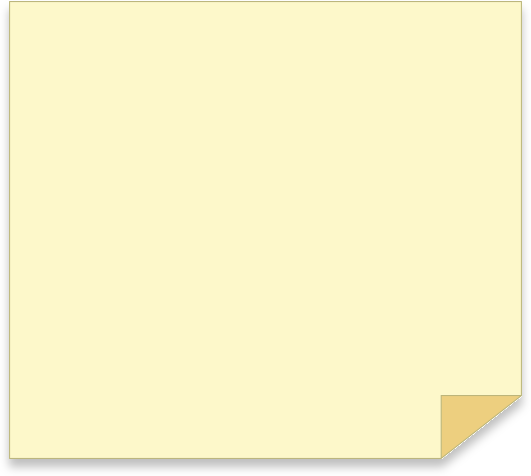
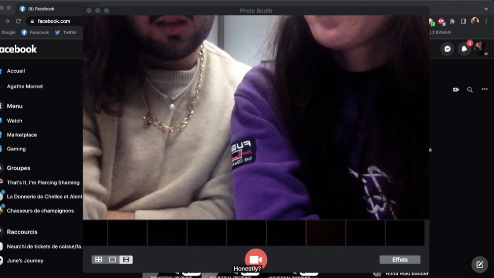
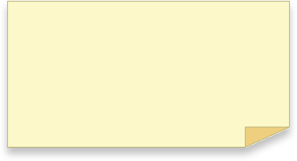
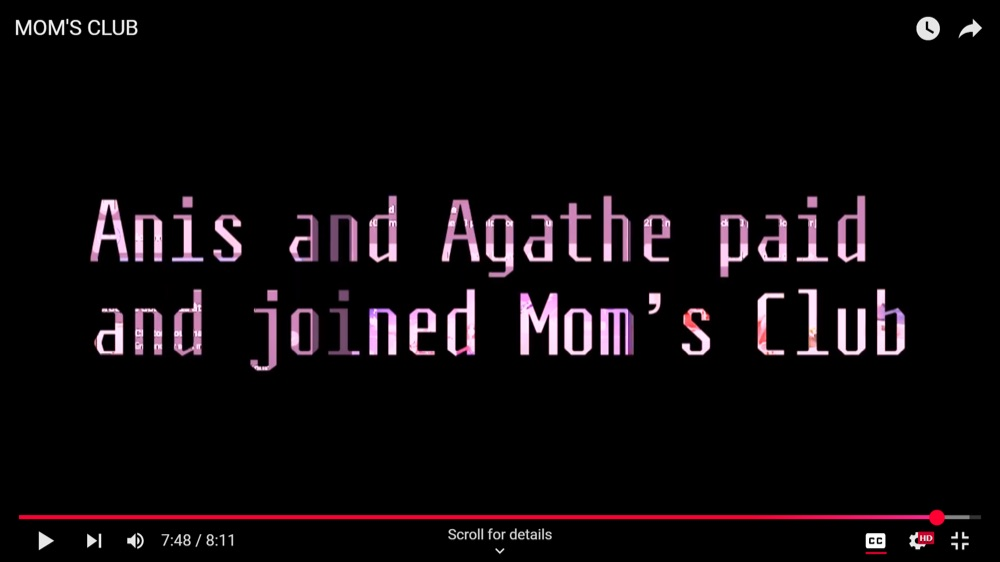

Anis Slimani
Inter-disciplinary Creative
MOM’S CLUB is a research-driven desktop documentary examining Facebook and the internet trends that dictate relevance. It critiques the ageist, occidental, and imperialistic standards shaping those trends, and analyses their societal implications.




In collaboration with Agathe MORNET
The documentary uses Adobe Premiere Pro, Audition, and After Effects to build a visually dynamic narrative, blending technical craft with critical cultural commentary.
MOM’S CLUB is a research-driven desktop documentary examining Facebook and the internet trends that dictate relevance. It critiques the ageist, occidental, and imperialistic standards shaping those trends, and analyses their societal implications.
The documentary uses Adobe Premiere Pro, Audition, and After Effects to build a visually dynamic narrative, blending technical craft with critical cultural commentary.
In collaboration with Agathe MORNET